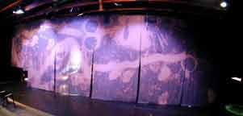

Carla Harryman
|
An excerpt from: "A Little Girl Dreams of Taking the Veil" Narrator: The night will come when the Academy of Science itself will not disdain to cast its gaze on the sewers of the world. The night will come when, covered with all their jewels, the secondary skeletons that one calls scientists will ask themselves this question: What do little girls dream of who want to take the veil? On that night a violent storm will break against the doors of the Academy of Science and the water will roar in the pipes. The water will remember the shameful year 1930, the year it would have like to see all the cathedrals of the universe parade in far-too short dresses. It will remember above all a certain night because...On good Friday night of the shameful year 1930, a child hardly sixteen years old dipped her two hands in a sewer pricked her skin and with her blood traced these lines: Marceline-Marie: To love the Holy Father and to dip one's hand in a sewer, such is happiness for us, the children of Mary.
Click on any image to see full size photo |
|||
|  |
|||
|
|
|||


|
RealAudio Files Introduction Tenebreuse 2 and Sleep (included above) The Hair |
MP3 Files Introduction Tenebreuse 2 and Sleep (included above) The Hair |